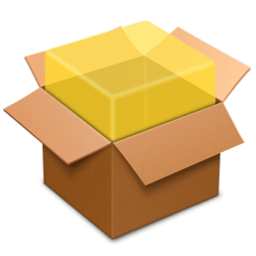
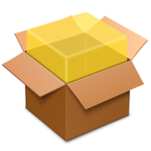
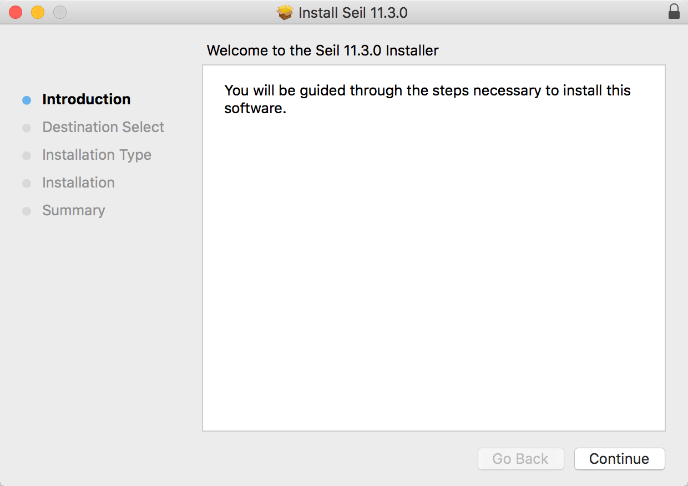
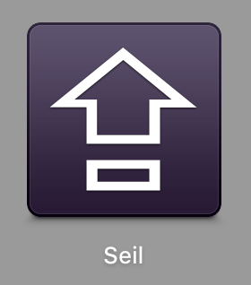

Seil
Utility for the caps lock key and some international keys in PC keyboards.
- You can change the caps lock key to another key. (eg. escape key)
- You can activate some international keys in PC keyboard.
Download Seil-12.1.0 For macOS 10.11

Seil functions are integraded to Karabiner-Elements. Please use Karabiner-Elements.
https://github.com/tekezo/Karabiner-Elements/blob/master/README.md
old versions and version history
Download Seil-11.3.0 For macOS 10.10, 10.9
Download Seil-10.11.0 For macOS 10.8
Download PCKeyboardHack-9.0.0 For macOS 10.7
Installation
Step 1
Open a downloaded dmg file, and then open a pkg file in dmg.
 

Step 2
Installer is launched. Install Seil.
For example, Seil will not work properly if you moved Seil.app into /Applications/Utils.
Step 3
Launch Seil from Launchpad.

Usage
Step 1
Open Launchpad (or open " Applications" folder from Finder).
Then, click Seil.
Note If you're using PCKeyboardHack 8.0.0 or earlier, Preferences is in System Preferences.
{kind=link}
Step 2
Activate items and change the keycode if needed.
Step 3 Important
If you are using Seil to change the behavior of caps lock, open "System Preferences > Keyboard > Modifier Keys..." and change caps lock configuration to "No Action".
You need to do this step to to reduce caps lock delay.

Note:
If you are using multiple devices, you should choose devices at "No Action" configuration.
Uninstall
- Press the "Launch uninstaller" button in Seil Preferences.
Q&A
How to change the caps lock key only in specified keyboards (retain an internal keyboard)?
Seil changes key behavior in all keyboards.
So, you cannot specify enabled devices in Seil.
But you can change keys only in specified devices by using Karabiner and Seil together.
First, change the caps lock key to f19 key in Seil, and then change f19 key in Karabiner.
Steps:
-
Change key code of the caps lock key to "80" in Seil.
(Do not forget "No Action" configuration.)Then the caps lock key works as f19 key.
-
Change f19 key in Karabiner with <device_only> tag.
Please use the following private.xml with replacing <vendorid> and <productid>.
(How to use private.xml.)
<?xml version="1.0"?>
<root>
<devicevendordef>
<vendorname>My_Keyboard_VendorID</vendorname>
<!-- *** Replace this value with yours. *** -->
<vendorid>0x05ac</vendorid>
</devicevendordef>
<deviceproductdef>
<productname>My_Target_Keyboard_ProductID</productname>
<!-- *** Replace this value with yours. *** -->
<productid>0x0245</productid>
</deviceproductdef>
<item>
<name>Change f19 key to delete key</name>
<appendix>(Change f19 key to caps lock key in internal keyboard.)</appendix>
<identifier>private.f19_hack</identifier>
<block>
<!-- change f19 key to delete key -->
<device_only>
DeviceVendor::My_Keyboard_VendorID,
DeviceProduct::My_Target_Keyboard_ProductID
</device_only>
<autogen>__KeyToKey__ KeyCode::F19, KeyCode::DELETE</autogen>
</block>
<block>
<!-- change f19 key to caps lock key in other devices -->
<autogen>__KeyToKey__ KeyCode::F19, KeyCode::CAPSLOCK</autogen>
</block>
</item>
</root>
Seil does not work on developer-only beta of macOS. Why?
We need to modify secret values of macOS to performs purpose of Seil.
However, we cannot access those secret values via SDK which Apple provides. We need source code of macOS to modify these values.
This source code will not be published until new macOS is shipped. Therefore, Seil is intentionally disabled on beta version of macOS.
Please wait until new macOS is shipped from Apple. And please wait new version of Seil for new macOS.
Command line interface
Seil provides a command line interface. (seil command)
- You can change settings.
- You can export configuration.
How to show help
Execute seil with no argument.
$ /Applications/Seil.app/Contents/Library/bin/seil Usage: seil export seil relaunch seil set IDENTIFIER VALUE Example: seil export seil relaunch seil set keycode_capslock 80
About "export" option
-
Export configuration by "export" option.
The output is a shell script.$ /Applications/Seil.app/Contents/Library/bin/seil export > ~/Desktop/seil-import.sh
-
You can import it from Terminal.
$ sh ~/Desktop/seil-import.sh ...........................................
Version History
Version 12.1.0 Apr 26, 2016 Download
You can disable auto resume function.
Version 12.0.0 Dec 4, 2015 Download
Version 11.3.0 Aug 8, 2015 Download
-
Fixed an issue:
- kext loading issue on macOS 10.11 beta 6 has been fixed.
Version 11.2.0 Jun 9, 2015 Download
- macOS 10.11 has been supported.
- Fast User Switching support has been improved.
Version 11.1.0 May 6, 2015 Download
- List of known key code has been updated.
Version 11.0.0 Dec 5, 2014 Download
- macOS 10.10 support has been improved.
- macOS 10.8 support has been dropped.
- List of known key code has been updated.
Version 10.11.0 Aug 30, 2014 Download
- Preferences UI has been updated.
- "Check for updates" (Sparkle) has been updated.
Version 10.10.0 Jul 22, 2014 Download
-
Fixed an issue:
- A message "Seil cannot connect with kernel extension" might be shown in some environment.
- Show an error alert when Seil is not placed in /Applications.
- SteelSeries Apex Gaming Keyboard has been supported.
Version 10.9.0 Jun 22, 2014 Download
-
Fixed issues:
- A message "Kernel extension is not loaded" might be shown in some environment.
- Preferences might not show properly after migration until you change the configuration or relaunch Seil.
Version 10.8.0 Jun 18, 2014 Download
- PCKeyboardHack has been renamed to "Seil" since version 10.8.0.
Version 10.7.0 Jun 3, 2014 Download
- Supported macOS 10.10.
- Changed a way to launch at login. (LaunchAgents -> Login Items)
Version 10.6.0 Mar 14, 2014 Download
- A command line interface (PCKeyboardHack_cli) has been added.
Version 10.5.0 Jan 26, 2014 Download
-
Fixed issues:
- "Kernel extension is not loaded" alert might be shown on some machines when automatic login is enabled.
Version 10.4.0 Dec 1, 2013 Download
-
PCKeyboardHack no longer requires system restart at installing or upgrading.
If you need to restart system for some reason, PCKeyboardHack will show an alert which urges you to restart. - Added a remappable key: Application Key (Menu Key) on PC keyboard.
Version 10.2.0 Nov 10, 2013 Download
- Signed kext with Developer ID.
- Updated installer.
Version 10.0.0 Oct 20, 2013 Download
- Supported macOS 10.9.
- Icons have been updated. (Thanks to Kouji TAMURA.)
- Signed with Developer ID.
Version 9.0.0 Jan 13, 2013 Download
- The preferences has been integrated into app.
- Some minor improvements.
Version 8.0.0 Aug 11, 2012 Download
- Update for macOS 10.8 Mountain Lion.
Version 7.4.0 Apr 24, 2012 Download
- Changed package archive format to dmg from zip.
Version 7.3.0 Feb 21, 2012 Download
- Added a remappable key: International Keys, Lang Keys and keys on Sun Type6 Keyboard.
- Updated source code for Xcode 4.3.
Version 7.2.0 Oct 26, 2011 Download
- Added a remappable key: ADB Keyboard Power Key.
- Resolved a minor installer issue.
Version 7.1.0 Aug 16, 2011 Download
- Added remappable keys: Command, Control, Option, Shift, Escape, Delete, Return, Keypad Enter.
- Added software update feature.
- Fixed a minor issue on Mac macOS 10.7.
Version 7.0.0 Jul 23, 2011 Download
- Update for Mac macOS 10.7 Lion.
- Removed "Change Control Key" feature. Use KeyRemap4MacBook to do it.
Version 6.3.0 May 11, 2010 Download
- Improved a log message.
Version 6.2.0 Jan 20, 2010 Download
- Improved the Preference Pane.
Version 6.1.0 Jan 5, 2010 Download
- Supported Fast User Switching.
Version 6.0.0 Sep 13, 2009 Download
- Stable release for Snow Leopard..
Version 5.1.0 May 26, 2008 Download
- Minor Improvements.
Version 5.0.0 May 7, 2008 Download
- Minor Improvements.
Version 2.3.0 Dec 15, 2007
- Initial release.